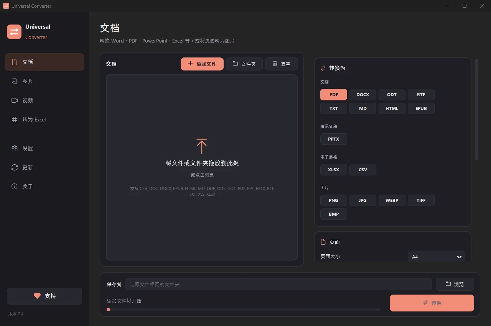

将 PDF 页面转换为 JPG 图片
有时需要把一页内容变成图片，用于发布、在聊天中发送或放入演示文稿。Universal Converter 将 PDF 或文档的每一页分别保存为清晰、可直接使用的 JPG 或 PNG。
免费 · Windows 10 和 11，64 位 · 病毒扫描报告
下载 Mac 版 Apple 芯片，macOS 12 或更高
如何安装和更新
- 打开下载的 .dmg，将 Universal Converter 拖到“应用程序”。
- 打开应用。首次打开时，macOS 会因为它未经 Apple 签名而阻止：点按“完成”。
- 打开“系统设置”>“隐私与安全性”，向下滚动，点按“仍要打开”并输入密码。只需操作一次。
更新：如果您在首次打开时允许，应用每次启动都会检查新版本，验证其数字签名，并在您选择时安装。
下载 Android 版 Android 10 或更高
如何安装和更新
- 在手机上点按“下载 Android 版”。
- 打开下载的文件。如果 Android 提示，请允许浏览器或文件管理器安装应用。
- 点按“安装”。
更新：应用大约每天检查一次，有新版本时会通知您。用同样的方式下载并覆盖安装旧版本，您的设置会保留。
操作步骤
- 打开 Universal Converter，在左侧选择文档。
- 把文件或整个文件夹拖入窗口，或点击“添加文件”。
- 在“转换为”中选择 JPG（或 PNG）。每一页都会成为一张图片。
- 点击“转换”。新文件会保存在原文件旁边，或保存到你选择的文件夹。

为什么离线处理？
Universal Converter 在你自己的设备上完成工作。文件保持私密，大文件也没问题，而且不联网也能用。